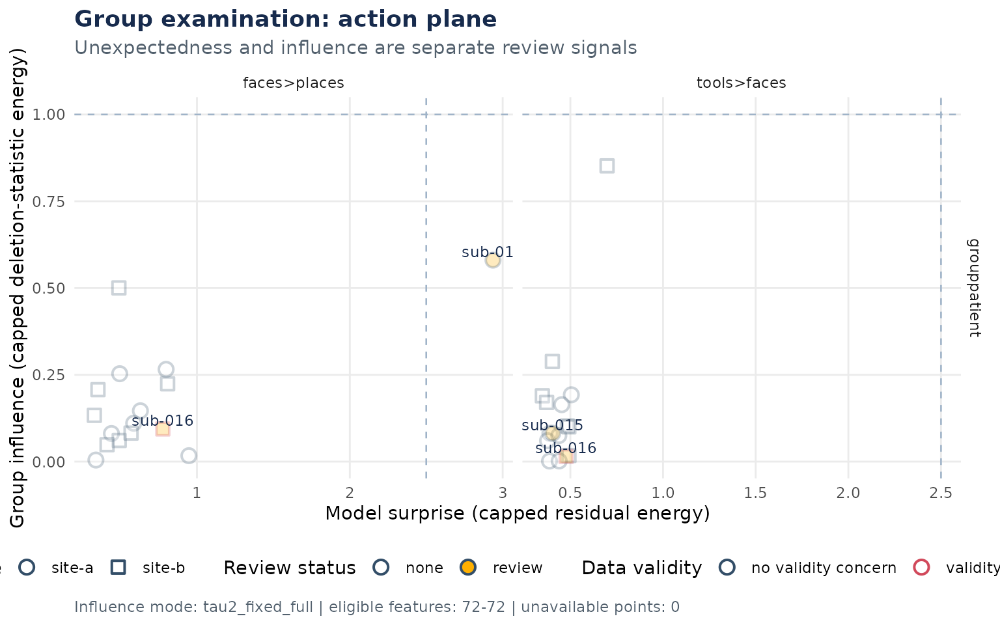
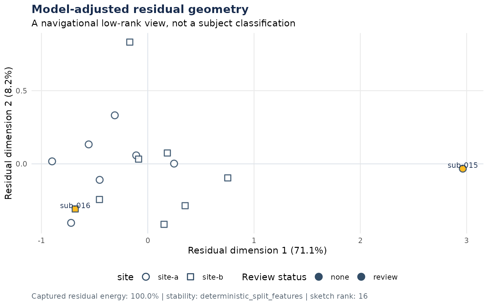
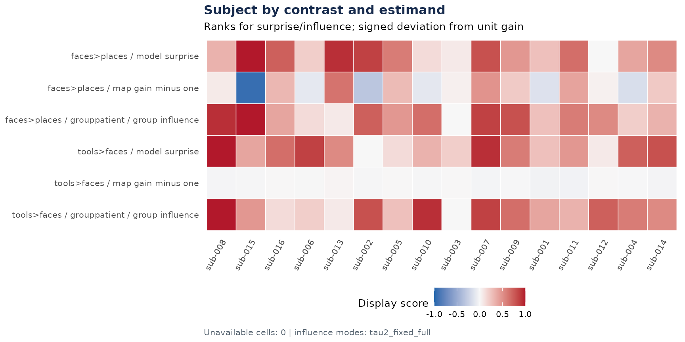
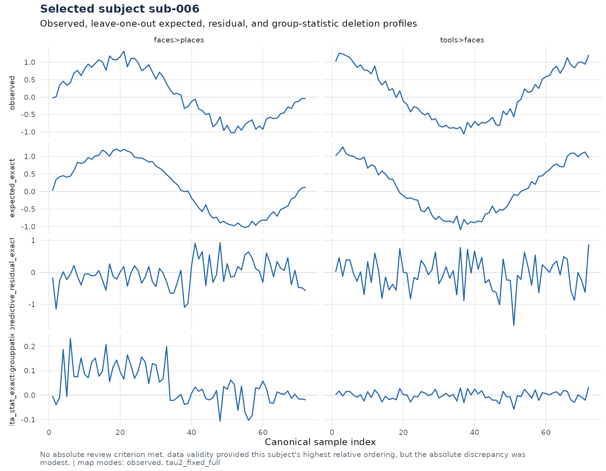

You have fitted a group model, but its average alone cannot tell you whether a participant is unexpected for their age, group, or site, or whether that participant materially changes the scientific result. These are different questions. A noisy estimate can look unusual and carry little weight; a precise, otherwise conventional estimate can have substantial influence.
examine_group() evaluates those questions against the
model already present in an fmrigds plan. It returns subject summaries,
group diagnostic maps, a model-adjusted residual geometry,
retained-subject maps, sensitivity results, and explicit availability
states. It never changes the source analysis.
What data do you need?
The most informative examination starts from subject effect estimates
and genuine first-level variances. Subject covariates and first-level
quality metrics belong in col_data. The example below has
two task contrasts, a group effect, an age term, two acquisition sites,
one unusually precise subject, and one subject whose first contrast is
reversed.
subject_maps
#> GDS
#> dims: 72 x 16 x 2 [sample x subject x contrast]
#> space: sample_labels n=72
#> subjects: 16 (sub-001, sub-002, sub-003, ...)
#> contrasts: 2 (faces>places, tools>faces)
#> assays: beta[location], var[variance]
head(col_data(subject_maps))
#> group age site mean_fd
#> sub-001 control 21.00000 site-a 0.1890169
#> sub-002 control 23.73333 site-b 0.1686657
#> sub-003 control 26.46667 site-a 0.1982143
#> sub-004 control 29.20000 site-b 0.1778023
#> sub-005 control 31.93333 site-a 0.2011709
#> sub-006 control 34.66667 site-b 0.2102025How do you run the examination?
Build the scientific analysis first. The example uses random-effects
meta-regression because its formula contains subject covariates. The
intercept-only meta:re reducer does not consume a formula;
use meta:re_reg when the expected response depends on
group, age, site, or other subject variables.
analysis <- as_plan(subject_maps) |>
reduce(
method = "meta:re_reg",
formula = ~ group + age + site
) |>
posthoc("fdr:bh")examine_group() locates that reducer, executes only its
subject-level prefix, and inherits its formula, options, and weighting
rules. You name the group estimand once. Quality variables are
descriptive unless you also give them an absolute direction and
threshold in examination_control().
exam <- examine_group(
analysis,
estimands = "grouppatient",
quality = "mean_fd",
control = examination_control(
review = list(
quality = list(
mean_fd = list(direction = "high", threshold = 0.5)
)
)
)
)
summary(exam)
#> Group examination
#> model: meta:re_reg
#> formula: ~group + age + site
#> subjects: 16 included, 0 excluded for covariates
#> variance mode: measured_first_level
#> review cases: 2
#> subject review_priority review_source
#> sub-015 1 surprise
#> sub-016 1 quality
#> review_reason
#> High unexpectedness with negative map gain in contrast faces>places.
#> Data-validity criterion met for mean_fd.How do you read the action plane?
The default plot keeps surprise and influence on separate axes. The dashed lines show the configured absolute review gates. Point opacity records the split-feature stability estimate. Only subjects that meet a gate receive a label; all subjects remain in the result.
plot(exam, group_by = "site")
The action plane separates model surprise from influence on the patient-control estimand.
A point on the right has a large externally predictive residual
pattern after adjustment for group, age, and site. A high point changes
the requested group statistic when deleted. Neither position supplies a
diagnosis or a removal rule. Use
exam$subject_data$review_reason and the contrast- and
estimand-specific tables to see which component set the review
status.
review <- exam$subject_data[
exam$subject_data$review_status != "none",
c("subject", "review_source", "review_priority", "review_reason")
]
review
#> subject review_source review_priority
#> 15 sub-015 surprise 1
#> 16 sub-016 quality 1
#> review_reason
#> 15 High unexpectedness with negative map gain in contrast faces>places.
#> 16 Data-validity criterion met for mean_fd.What does the residual geometry add?
The embedding summarizes model-adjusted residual patterns. It can reveal a stable subgroup, a site-associated gradient, or an isolated pattern, but it is not a clustering result. The caption reports how much residual energy the retained dimensions capture, and opacity reports stability under deterministic feature splits.
plot(exam, type = "embedding", group_by = "site")
Low-rank geometry of signed, model-adjusted predictive residuals.
The heatmap keeps contrast-specific surprise, signed map gain, and estimand-specific influence visible without collapsing them into one score.
plot(exam, type = "heatmap")
Subject summaries across contrasts and the requested estimand.
How do you inspect one retained subject?
The second pass retains maps only for the review queue, explicitly requested subjects, and the configured highest-priority cases. Choose one of those IDs to compare the observed map, leave-one-out expectation, standardized residual, and change in the group statistic.
selected_subject <- exam$config$retained_subjects[1]
selected_subject
#> [1] "sub-006"
plot(exam, subject = selected_subject)
Linked profiles for one retained subject.
For a random-effects model, the opening ranking uses analytic
deletion with the full-data heterogeneity estimate held fixed. Retained
subjects also receive an exact refit that re-estimates heterogeneity.
The mode and ranking_stage columns keep those
results distinguishable; exact refits do not recursively change the
review queue.
What happens to the post-hoc conclusion?
Because the analysis includes BH FDR, the examination recomputes that
threshold-dependent conclusion for retained subjects only. These counts
and maps live under exam$conclusion, separate from the
continuous influence metrics. A custom post-hoc method without a
case-deletion contract remains available for the full fit but is
reported as unavailable for deleted cases.
head(exam$conclusion$results)
#> subject contrast estimand method source_assay result_assay alpha
#> 1 sub-006 faces>places grouppatient fdr:bh p q 0.05
#> 2 sub-006 tools>faces grouppatient fdr:bh p q 0.05
#> 3 sub-008 faces>places grouppatient fdr:bh p q 0.05
#> 4 sub-008 tools>faces grouppatient fdr:bh p q 0.05
#> 5 sub-013 faces>places grouppatient fdr:bh p q 0.05
#> 6 sub-013 tools>faces grouppatient fdr:bh p q 0.05
#> full_significant_n deleted_significant_n transition_count gained_n lost_n
#> 1 0 0 0 0 0
#> 2 3 3 0 0 0
#> 3 0 0 0 0 0
#> 4 3 0 3 0 3
#> 5 0 0 0 0 0
#> 6 3 3 0 0 0
#> mode seed status reason
#> 1 tau2_refit_exact NA available <NA>
#> 2 tau2_refit_exact NA available <NA>
#> 3 tau2_refit_exact NA available <NA>
#> 4 tau2_refit_exact NA available <NA>
#> 5 tau2_refit_exact NA available <NA>
#> 6 tau2_refit_exact NA available <NA>How do you share the examination?
write_report() creates one HTML file with inline CSS and
SVG. The action plane and geometry link to retained-subject sections.
The file has no external font, image, script, or stylesheet
dependency.
report_file <- file.path(tempdir(), "fmrigds-group-examination-report.html")
write_report(exam, report_file, overwrite = TRUE)
report_file
#> [1] "/tmp/RtmpMse5qj/fmrigds-group-examination-report.html"The examination and the population fit remain separate branches. Compute the fit when you are ready to interpret the group result:
fit <- compute(analysis)
names(assays(fit))
#> [1] "tau2" "Q" "df_res"
#> [4] "coef:(Intercept)" "coef:grouppatient" "coef:age"
#> [7] "coef:sitesite-b" "se_coef:(Intercept)" "se_coef:grouppatient"
#> [10] "se_coef:age" "se_coef:sitesite-b" "z_coef:(Intercept)"
#> [13] "z_coef:grouppatient" "z_coef:age" "z_coef:sitesite-b"
#> [16] "p_coef:(Intercept)" "p_coef:grouppatient" "p_coef:age"
#> [19] "p_coef:sitesite-b" "q_coef:(Intercept)" "q_coef:grouppatient"
#> [22] "q_coef:age" "q_coef:sitesite-b"If only effect maps are available, use ols:voxelwise.
The examination labels that route as effect-only and does not interpret
synthetic unit variance as measured precision. For configuration
details, see ?examine_group and
?examination_control.